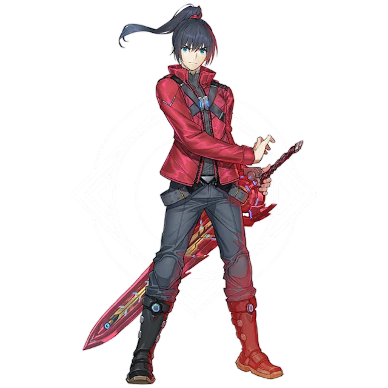
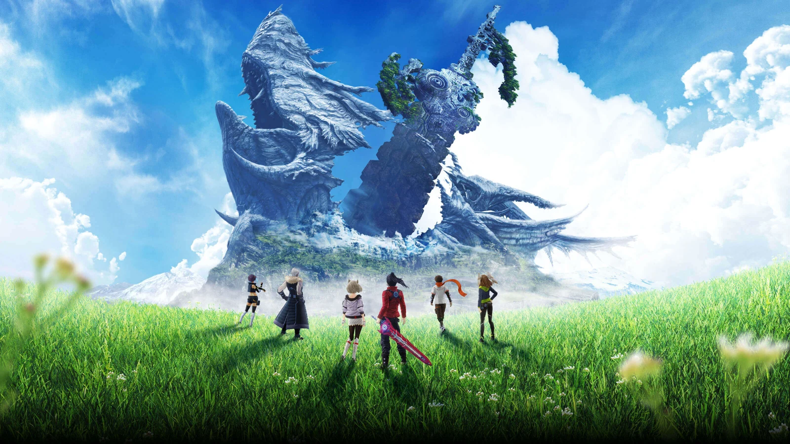
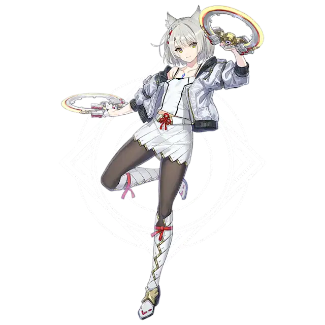

Noah
Off-seer of Keves
A swordsman who honors fallen soldiers with his flute. He questions why the cycle of fighting has to continue.
Xenoblade Chronicles Game Guide

Six soldiers from rival nations join forces to discover who benefits from a war that has lasted their entire lives.
Aionios is divided between Keves and Agnus. Noah and Mio begin on opposite sides, each serving as an off-seer who plays music for fallen soldiers. An encounter forces their squads to travel together and question the rules they grew up with.
All six party members fight together. Swapping classes changes how each character attacks, defends, or heals, and pairs can temporarily fuse through Interlinking.

Off-seer of Keves
A swordsman who honors fallen soldiers with his flute. He questions why the cycle of fighting has to continue.

Off-seer of Agnus
A quick fighter who wields a pair of rings. Her role as an off-seer gives her common ground with Noah.